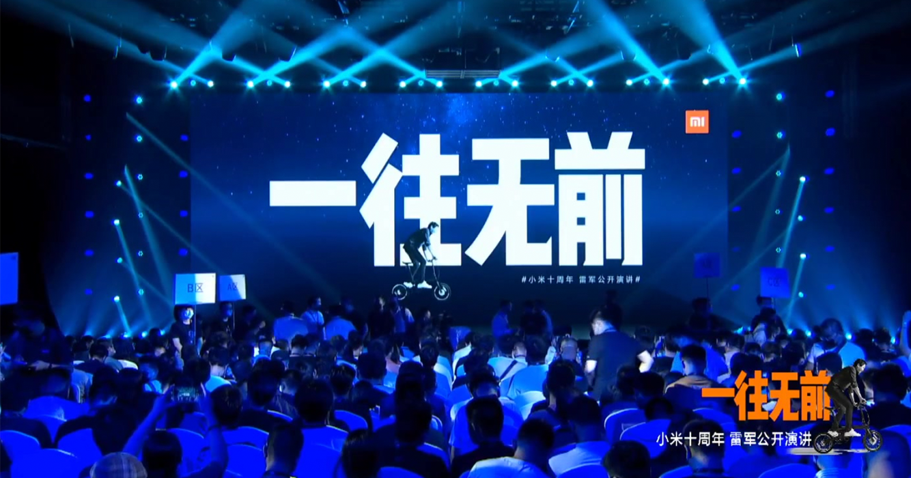

终于，终于，我们来聊聊小米 10 Ultra。

我一直很想聊聊小米 10 Ultra。
差不多要过去三年时间了，在这台设备就快达到大家所谓的「换机年限」的时候，我终于下定决心，提笔聊一聊它了。
着眼目前这个时点，小米在如今的手机市场自然交出了令人印象深刻的答卷 —— 13 系列中正且水桶、12S Ultra 健全且强大，是同价位中性价比相当优秀的选择，然后大家都在期待着 13 Ultra。它们给我的感觉，很像小米刚刚发布 10 系列的那时候。趟过了 11 系列的阴霾和 12 系列的惨淡，小米似乎「回来」了，回到了大家熟悉的那个小米。
而这就是为什么，我想回顾回顾历史，谈谈 10 Ultra。
听我慢慢道来。
| 「优秀」的普通
如果你问我当时为什么会选择这台设备，我会回答你「极致的性价比」。
在当时的那个时点，120 Hz 的屏幕，120 W 的充电和 120X 的变焦，着实会让我迷失。这使得我在雷总大声呼告着「一往无前」那个晚上，冲动地定下了它，这份小米「未来的曙光」，还顺带定下了一台「过去的回忆 —— 1999」。
小米给的确实很多。
这三点提升小米吃着老本拖到了如今。甚至拥有同款超长焦镜头的小米 12S Ultra 却并不拥有 120 W 快充，同时还丢了一颗 2X 人像镜头。
我当然知道或许我并不需要这些。如果再晚 2 个月，我的选择可能会完全不同。纵使失去了灵魂，Smartisan R2 仍旧打动我的心。但是最终我还是选择了小米 10 Ultra。毕竟那些大数字确实会让一个自封「设备爱好者」的人迷失。
而且它引以为傲的性能，也确实没有让我失望。
120 Hz 屏幕随处可见，但正因如此它至今也没有落伍；120 W 的快充彻底改变了我的充电方式，我逐渐喜爱上夜晚随手放置，早上随意补能就能使用一天的轻松；120X 的变焦我虽然并没有经常使用，但是我确实十分热爱那颗 12S Ultra 缺失的 2X 人像镜头，它的取景和虚化令我着迷，我用它记录了无数的生活瞬间。
站在这个角度，它实在是一款优秀的设备。
但是它「优秀」得过于「普通」了。
「普通」到没有一丝丝棱角。「普通」到三年后的今天，它的优势不再是优势。「普通」到三年间的使用，它的优势完全无法抹消我对它的失望。
| 「优秀」的背后，它还剩下什么
我对它的外观是失望的，这毋须讳言。
随着功能逐渐趋同，设计的趋势逐渐集中到了这两点：注重材质以及带来「独特」的仪式感。这基本成了「超大杯」设计的共识，三年前的小米 10 Ultra 也不能免俗。陶瓷镜面和透明版背壳咄咄逼人，超长焦镜头的银色装饰圈明显是 9 / 10 系列「天使眼」设计的 Ultra 版本。独特性或许有了，但是它有些刻意，刻意到有些过分。
凸显材质的「高贵设计」有些落后时代，小米 10 和 10 Pro 的矜持荡然无存。同时，为了塞下这份性能，6.67 英寸的宽广和 220 克以上的伟岸也必不可少。
当然，现在的我们早已见怪不怪。毕竟设计正在趋同。
这是因为我们对设备的需求正在趋同。更重要的，这些厂商给到我们的也只有这些。
随着正面只剩下屏幕，正面设计的可操作性越来越少。「全面屏」时代让我印象深刻的唯有华为 P40 那块「四曲满溢屏」，增强了滑动屏幕四周带来的体验，是一个优化正面屏幕体验的优良微创新。站在这个角度，无论是对是错，走向「折叠屏」确实带来了新的发展路径。
所以大家着眼相机。「创新」相机是一个必然的选择，或许是在电池技术进步之前硕果仅存的创新点。逐渐「相机化」的军备竞赛，大家几乎都开始从「相机」的角度设计手机，这在如今的市场中随处可见。
设备逐渐「非设备化」，这不完全是它自身的原因。追求性能是设备的宿命，而更多的是我对「我如何选择一件随身的重要工具」的重新思考。
我们需要的，或许只是一台「中正」的，从设计「手机」的角度，真正「为了设计一台手机」而创造的设备。
小米 10 Ultra 昭示了一个时代的开始，而正是它使我明确了这一点。
| 回归「日常」
所有的评测，都会着眼于厂商发布当下，最多是发布半年前后设备的使用体验。
这并不存在什么问题，他们的工作就是「体验设备」并「输出观点」，我也没有资格去指摘这些。我当然也赞成「不要看厂商未来会给你什么，要看他们现在给了你什么」的观点。例如发布时画下一个大饼，框住了所有关注的目光，之后在设备生命的最后交付似是而非的功能——这点诚然是不可以接受的。
但这并不代表，我们就无需考虑它们的未来。
外观和硬件仅仅是一个方面。对于大多数使用者来说，产品的使用周期也不可能仅仅只是短短的几天。
而在这方面，小米 10 Ultra 可以说是近几年的小米旗舰当中相当不合格的一台。
出厂搭载 MIUI 12。这句话可以表达很多事情了。
我曾无数次遇到过让我抓狂的系统问题，这些问题磨削了我对它的耐心。触控漂移，按键失灵，无法静音，联网迟钝。每次解锁屏幕都需要担心是否会出现神奇的 Bug，同时温热的触感也加深了我的厌烦，纵使 SN865 是高通当时最优秀的 SoC（此处心疼 11 和 12 系列的用户）。
然后，我失去了这台设备能够「持续稳定」的预期。
曾经的小米是能够给我们提供这个「预期」的。
最开始，是通过开发版。
小米 4 能够从 MIUI v5 持续更新到 MIUI 10，一代钉子户小米 6 也能够从 MIUI 8 持续更新到 MIUI 12 且始终维护开发版和稳定版。但同时，晚发布半年的 10 Ultra，与 10 和 10 Pro 一起在 2022 年末丧失了开发版更新的资格。
这距离它发布，正好 2 年。
这不像是一台旗舰应得的待遇。
其实我并不想从系统维护时间长短，还是说系统版本号是否最新，来推断 MIUI 是否良心。停更开发版并不代表后续的系统维护就到此为止，我也不会给日常用机刷开发版，而且如今 MIUI 的开发版也谈不上比稳定版流畅 —— 开发版和稳定版都不是很稳定。但是这确实是小米和 MIUI 团队对这些设备的态度的体现。
确实，就系统日常使用打磨的稳定程度来看，发版 4 年的小米 4 和小米 6，在生命周期中的最后一个 MIUI 版本的优化程度虽然不足，但可以寻求回退曾经的系统版本「养老」。而在如今 MIUI 的机型适配越来越不尽人意的情况下，MIUI 13 推出之后对停留在 12.5 稳定版的机型大多都直接摆烂不做优化。现在的小米，背着 xiaomi、Redmi 诸多机型的大山和造车的重任，对 MIUI 势必无法全心全意，更别提为老用户提供稳定更新。
「生而动荡」的小米 10 Ultra，我并没有它会被良善对待的信心。而事实也确实如此。
| 努力的背后，是叹息
这句话曾是这篇文章的标题，后来我换成了现在的这个：绝赞 Demo 测试中。
Ultra 的背后，是 Test。Ultra 系列是小米的一次期末测验。
这些设备身上所代表的让小米引以为傲的技术，很快就会以更柔和的方式传承到未来的设备中。他们更轻巧、更实用，同时也更受到大家喜爱。上一台是小米 10 Ultra，下一台是小米 12S Ultra，再下一台恕我无知。
小米 10 Ultra 的「3 个 120」在小米 11 上便升级到来，且盼来了 2K 屏幕以及极致工程设计的体现 IP68；小米 12S Ultra 的影像被小米 13 Pro 继承，还提升了充电功率回归了 120 W。
正因如此，在 10 Ultra 之后，我开始警惕所有未经全球发售的小米 Ultra 系列机型。
因为我知道，再等半年，会有更好的。
当然，还需要 Snapdragon 给点力。

而回到小米自身，现在的小米，无法建立起属于自己的、真正意义上的真「高端」。
小米创造出了一代又一代优秀的「水桶」—— 更大的屏幕和电池，更好的相机和性能，同时也有着更贵的价格。但更贵的价格只是我们从小米手中购买更「优秀」的性能入场券，而这些性能代表的体验极易分崩离析。
我当然知道小米 13 系列非常出色，尤其是中杯，是回归使用理性，均衡且取舍，不会出错的优秀选择，外观也十分打动我这种「Pixel 4 失独用户」。我当然也知道小米傍上了徕卡之后，影调变得十分讨喜，真的能做到随手成篇。但是我还是迟迟无法做出决定。
当我花费 6000 元购买一台手机，我自然是希望它强大、实用且稳定的，而稳定是其中最重要的一环。我已经丧失了对 MIUI 稳定的预期，MIUI 摧毁掉了我黄金年代对它的所有信任。我自然知道 MIUI 14 回到了优秀的水平。但是同时我也记得，用着 MIUI 11 看着 MIUI 12 发布会的我确实也不清楚即将遇到的是这么一个鬼玩意。
或许是被 MIUI 给 PUA 了。现在的我，或许会选择去买买 Sony Xperia，去把难用的系统变好用，或许比等待本该好用的系统变得更好用，更让人心潮澎湃。又或者去投奔 iPhone 或者 Google Pixel，无聊但是美观稳定，实在是动荡之后我难以割舍的安心。
小米 10 Ultra，它站在一个奇特的历史经纬。它比「旧」稳定不足，比「新」配置有余，缺失独特气质也没有把玩的快意。它实在是小米的一个独特的里程碑，但现在的我或许已经配不上它了。
让工具回归工具，让我回归我的生活，这才是最重要的事情。
而那些绝赞的「优秀」，或许也不是那么重要。